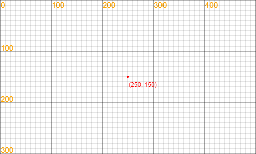

Learning Programing with LeapLearner (II)¶
Chapter 1 丰富的颜色¶
Lesson 1 使用常见颜色¶
在JS中，我们可以输入颜色的英文名称，使用到丰富多彩的颜色。在使用颜色时，我们要用一对引号（" "）将颜色名称的英文单词包起来。例如，在使用黑色的时候，我们需要输入的是"black"。
想一想¶
你在生活中见过哪些颜色？
你能说出几种颜色的名字？
你能说出几种颜色的英文名字？
试一试¶
填出彩虹七种颜色的英文单词：
红色：（ ） 橙色：（ ） 黄色：（ ） 绿色：（ ） 青色：（ ） 蓝色：（ ） 紫色：（ ）
做一做¶
画出彩虹：
- 参考代码：
canvas.width = 400; canvas.height = 300; var c1 = new Circle(200,400,350); c1.fillStyle = "red"; c1.fill(); var c2 = new Circle(200,400,335); c2.fillStyle = "orange"; c2.fill(); var c3 = new Circle(200,400,320); c3.fillStyle = "yellow"; c3.fill(); var c4 = new Circle(200,400,305); c4.fillStyle = "green"; c4.fill(); var c5 = new Circle(200,400,290); c5.fillStyle = "cyan"; c5.fill(); var c6 = new Circle(200,400,275); c6.fillStyle = "blue"; c6.fill(); var c7 = new Circle(200,400,260); c7.fillStyle = "purple"; c7.fill(); var c8 = new Circle(200,400,245); c8.fillStyle = "white"; c8.fill();
Lesson 2 使用Web标准色¶
在网页上，不仅是彩虹的7种颜色，有许多颜色都已经被命了名，这可以大大方便我们使用自己想要的颜色，创作更美的作品。
这些颜色都可以在这个网址中找到：http://web.chacuo.net/
如下图所示，点击色块，该颜色的名称就出现在左上角的框中，可以直接使用。

做一做¶
从Web标准色中选择你喜欢的颜色，为下列代码项目填色：
项目代码：
canvas.width = 500; canvas.height = 500; var bg = new Sprite('http://owtvvc2bc.bkt.clouddn.com/BG2.png',0,0,500,500); var body = new Ellipse(175,250,150,180); var eye1 = new Ellipse(130,170,65,55); var eye2 = new Ellipse(220,170,65,55); var tripe = new Ellipse(175,290,130,140); var leftEye = new Circle(125,180,35); var leftEye2 = new Circle(125,180,20); var leftEye3 = new Circle(125,180,10); var rightEye = new Circle(225,180,35); var rightEye2 = new Circle(225,180,20); var rightEye3 = new Circle(225,180,10); var mouth = new Triangle(160,220,190,220,175,255); var ball = new Circle(100,100,30); var isWaveLeft = 0; var waveLeft = 0; var shout = new Audio(); shout.src = "http://rss.leaplearner.com/Audio/Com/touch.mp3"; var hit = new Audio(); hit.src = 'http://rss.leaplearner.com/Audio/Dinner/closeui.mp3'; var moveX = 0; var moveY = 0; var Color = { eyeBall: "grey", eyeRim: "lightgrey", eyeCore: "white", tripe: "grey", feather: "lightgrey", ball: "lightgrey", beak: "lightgrey" }; var myColor = { eyeBall: "", eyeRim: "", eyeCore: "", mouth: "", tripe: "", feather: "", ball: "", beak: "" }; var Speed = { ballX: 7, ballY: 4 }; leftEye3.moveX = 0; leftEye3.moveY = 0; rightEye3.moveX = 0; rightEye3.moveY = 0; tripe.fillStyle = Color["tripe"]; eye1.fillStyle = Color["tripe"]; eye2.fillStyle = Color["tripe"]; body.fillStyle = Color["feather"]; leftEye.fillStyle = Color["eyeRim"]; leftEye2.fillStyle = Color["eyeBall"]; leftEye3.fillStyle = Color["eyeCore"]; rightEye.fillStyle = Color["eyeRim"]; rightEye2.fillStyle = Color["eyeBall"]; rightEye3.fillStyle = Color["eyeCore"]; ball.fillStyle = Color["ball"];; mouth.fillStyle = Color["beak"]; function Loop() { tripe.fillStyle = (myColor["tripe"] === "") ? Color["tripe"] : myColor["tripe"]; eye1.fillStyle = (myColor["tripe"] === "") ? Color["tripe"] : myColor["tripe"]; eye2.fillStyle = (myColor["tripe"] === "") ? Color["tripe"] : myColor["tripe"]; body.fillStyle = (myColor["feather"] === "") ? Color["feather"] : myColor["feather"]; leftEye.fillStyle = (myColor["eyeRim"] === "") ? Color["eyeRim"] : myColor["eyeRim"]; leftEye2.fillStyle = (myColor["eyeBall"] === "") ? Color["eyeBall"] : myColor["eyeBall"]; leftEye3.fillStyle = (myColor["eyeCore"] === "") ? Color["eyeCore"] : myColor["eyeCore"]; rightEye.fillStyle = (myColor["eyeRim"] === "") ? Color["eyeRim"] : myColor["eyeRim"]; rightEye2.fillStyle = (myColor["eyeBall"] === "") ? Color["eyeBall"] : myColor["eyeBall"]; rightEye3.fillStyle = (myColor["eyeCore"] === "") ? Color["eyeCore"] : myColor["eyeCore"]; mouth.fillStyle = (myColor["beak"] === "") ? Color["beak"] : myColor["beak"]; ball.fillStyle = (myColor["ball"] === "") ? Color["ball"] : myColor["ball"]; canvas.clear(); bg.draw(); ball.x += Speed["ballX"]; ball.y += Speed["ballY"]; mouth.points[2].y = 250 + waveLeft; if (ball.x < ball.r || ball.x > (canvas.width - ball.r)) { Speed["ballX"] = -Speed["ballX"]; hit.play(); } if (ball.y < ball.r || ball.y > (canvas.height - ball.r)) { Speed["ballY"] = -Speed["ballY"]; hit.play(); } if (isWaveLeft == 1) { waveLeft += 0.5; if (waveLeft > 10) { isWaveLeft = -1; } } if (isWaveLeft == -1) { waveLeft -= 0.5; if (waveLeft <= 0) { waveLeft = 0; isWaveLeft = 0; } } foot(110,410,10,30,-1,waveLeft); foot(240,410,10,30,1,-waveLeft); ear(110,95,20,50,-1,-waveLeft); ear(240,95,20,50,1,waveLeft); body.fill(); eye1.fill(); eye2.fill(); tripe.fill(); leftEye3.look(ball); rightEye3.look(ball); leftEye.fill(); leftEye2.fill(); leftEye3.fill(); rightEye.fill(); rightEye2.fill(); rightEye3.fill(); feather(135,360,15,30 + waveLeft/2,Color["feather"]); feather(175,360,15,30 + waveLeft/2,Color["feather"]); feather(215,360,15,30 + waveLeft/2,Color["feather"]); feather(115,310,15,30 + waveLeft/4,Color["feather"]); feather(155,310,15,30 + waveLeft/4,Color["feather"]); feather(195,310,15,30 + waveLeft/4,Color["feather"]); feather(235,310,15,30 + waveLeft/4,Color["feather"]); feather(95,260,15,30 + waveLeft/2,Color["feather"]); feather(135,260,15,30 + waveLeft/2,Color["feather"]); feather(175,260,15,30 + waveLeft/2,Color["feather"]); feather(215,260,15,30 + waveLeft/2,Color["feather"]); feather(255,260,15,30 + waveLeft/2,Color["feather"]); mouth.fill(); ball.fill(); nextFrame(Loop) } function feather(x,y,rx,ry,color) { var a = new Ellipse(x,y,rx,ry); var b = new Rectangle((x-rx),(y-ry),(2*rx),ry); a.strokeStyle = color; b.fillStyle = tripe.fillStyle; b.strokeStyle = tripe.fillStyle; a.lineWidth = 3; b.lineWidth = a.lineWidth + 1; a.stroke(); b.draw(); } function foot(x,y,rx,ry,side,moveD) { var a = new Ellipse(x,y,rx,ry); a.fillStyle = body.fillStyle; a.setAnchor(x,y); a.rotate(moveD); a.fill(); a.rotate(-10*side + moveD); a.translate(10*side,0); a.fill(); a.rotate(-20*side + moveD); a.translate(20*side,0); a.fill(); } function ear(x,y,rx,ry,side,moveD) { var a = new Ellipse(x,y,rx,ry); a.fillStyle = body.fillStyle; a.setAnchor(x,y); a.rotate(-15*side + moveD); a.fill(); } function LookAt(goal) { var size = 7/Math.sqrt((goal.x-this.x)*(goal.x-this.x)+(goal.y-this.y)*(goal.y-this.y)); this.translate((goal.x-this.x)*size,(goal.y-this.y)*size); } function moveEar() { isWaveLeft = 1; shout.play(); } leftEye3.look = LookAt; rightEye3.look = LookAt; Mouse.click = moveEar; //---------------------------------------------- myColor = { feather: "", //羽毛的颜色 eyeRim: "", //眼眶的颜色 eyeBall: "", //眼珠的颜色 eyeCore: "", //眼珠中心的颜色 tripe: "", //肚子的颜色 beak: "", //嘴的颜色 ball: "" //小球的颜色 }; Speed = { ballX: 3, //小球向右移动的速度 ballY: 2 //小球向下移动的速度 }; loadRssAndRun(Loop);
Chapter 2 图形的属性¶
Lesson 3 认识坐标¶
为了定义空间的位置，数学家们发明了坐标的概念，在此至上发展出了庞大的几何学科。在计算机图形中，坐标系统更是不可或缺。
我们将左上角的坐标定义为(0,0)，把水平轴为x轴，把垂直坐标定义为y轴。平面上的任意一个点，在x轴上的投影称之为该点的x坐标，同样，在y轴上的投影即y坐标。因此，整个坐标系看起来像是这个样子的。

只要确定了坐标点的值，我们就能很容易的确定坐标的位置了。比如点（250，150）在坐标轴上的位置，我们就可以很容易找出来了。

试一试¶
请说出以下各点的坐标：
A：( , ) B：( , ) C：( , ) D：( , )

请在下列坐标系中标出以下几个点的位置
A：(200 , 100) B：(200,300) C：(100,300) D：(300,300)

为了方便我们使用坐标，在我们的开发环境中，只要将鼠标移动到画布上，在画布的左下角就会显示鼠标当前位置的坐标。
要学会巧妙使用哦！
Lesson 4 线段的属性¶
我们已经学习过如何创建线段，并将它画出来，你还记得是怎样做的吗？
试一试¶
在代码的对应位置填入正确的数字，让其画出的线段如图所示：

var line = new Line(_____,_____,_____,_____); line.draw();
线段的宽度
如果我们想要画一条更粗的线，应该怎么办呢？
这时候，我们就要改变线段的宽度了。
线段默认的宽度是1，我们要将它改为5，就需要在画出线条前重新设定线条的宽度。
因此我们要在
line.draw();前增加一行代码，完整代码如下：var line = new Line(50,50,150,150); line.lineWidth = 5; line.draw();
其中，
lineWidth是线段的一个属性，表示的是线段的线条宽度，我们可以将它设置为任意一个大于0的数字。线段的颜色
如果要改变线段的颜色，又应该怎么办呢？
类似的，我们在
line.draw();前增加一行代码，就可以重新设置线段的颜色了。完整代码如下：
var line = new Line(50,50,150,150); line.lineWidth = 5; line.strokeStyle = "red"; line.draw();
其中，
strokeStyle是线段的另一个属性，它表示的是线段的线条颜色，我们可以将它设置为任意颜色。注意，颜色的名称外一定要加上一对" "哦！
做一做¶
adidas是世界著名的运动品牌，它的标志由三条斜杠组成，代表山区，指出实现挑战、成就未来和不断达成目标的愿望。
你能仿照上图，画出adidas的三条纹标志吗？
参考代码
canvas.width = 400; canvas.height = 400; //画出左起第一条线 var line1 = new Line(100, 170, 136, 230); line1.lineWidth = 40; line1.strokeStyle = "black"; line1.draw(); //画出左起第二条线 var line2 = new Line(140, 130, 200, 230); line2.lineWidth = 40; line2.strokeStyle = "black"; line2.draw(); //画出左起第三条线 var line3 = new Line(180, 90, 264, 230); line3.lineWidth = 40; line3.strokeStyle = "black"; line3.draw(); //画一条很宽的白线遮挡底部 var line4 = new Line(80, 220, 290, 220); line4.lineWidth = 60; line4.strokeStyle = "white"; line4.draw();

Lesson 5 圆形的属性¶
我们已经学习过如何创建圆形对象，并将它画出来，你还记得是怎样做的吗？
试一试¶
在代码的对应位置填入正确的数字，让其画出的线段如图所示：

var circle = new Circle(_____,_____,_____); circle.draw();
想一想¶
观察下图中三个圆的画法，说说它们有什么不同？

图中演示了圆的三种画法：描边，填充和绘制。
- 描边：只画出圆的边线，如图中左边的圆所示
- 填充：只画出圆的内部，不画出边线，如图中中间的圆所示
- 绘制：同时画出圆的边线和内部，如图中右边的圆所示
我们接下来学习一下与描边和填充相关的知识。
描边：只画出圆的外框
如果想以描边的方式来画出圆，就不能使用
circle.draw();了，应该使用以下代码：var circle = new Circle(100,100,50); circle.stroke();
其中，
stroke()是圆的另一个方法，它的作用就是以描边的方式画出圆。改变描边的宽度和颜色
那么，我们如何改变圆形描边的宽度和颜色呢？在学习线段时，我们已经接触过这两个属性了。请看下面一段代码：
var circle = new Circle(100,100,50); circle.lineWidth = 7; circle.strokeStyle = "blue"; circle.stroke();
它的效果如下图所示：

其中：
- lineWidth控制的是圆形描边的宽度，可以设置成任意大于0的数字，
circle.lineWidth = 7;就是将circle这个圆的描边宽度设置为了7 - strokeStyle控制的是圆形描边的颜色，可以设置成任意颜色，
circle.strokeStyle = "blue";就是将circle这个圆的描边设置为了蓝色
- lineWidth控制的是圆形描边的宽度，可以设置成任意大于0的数字，
填充：只画出圆的内部
如果想以填充的方式来画出圆，需要使用的是
fill()方法，如以下代码所示：var circle = new Circle(100,100,50); circle.fill();
fill()方法的作用就是以填充方式画出圆。改变填充颜色
我们也可以改变填充颜色，需要用到的属性是
fillStyle，请看以下代码：var circle = new Circle(100,100,50); circle.fillStyle = "yellow"; circle.fill();
这段代码的效果如下：

其中，
fillStyle可以设置成任意颜色，circle.fillStyle = "yellow";就是将circle这个圆的填充颜色设置为了黄色
做一做¶
奥运五环，是我们非常熟悉的一个标志。它由蓝、黄、绿、红、黑五个颜色的圆环组成，象征世界上承认奥林匹克运动，并准备参加奥林匹克竞赛的五大洲。请参考五环标志图，用代码画出五环标志。
- 参考代码
canvas.width = 300; canvas.height = 200; var circle1 = new Circle(50, 70, 40); circle1.lineWidth = 8; circle1.strokeStyle = "blue"; circle1.stroke(); var circle2 = new Circle(150, 70, 40); circle2.lineWidth = 8; circle2.strokeStyle = "black"; circle2.stroke(); var circle3 = new Circle(250, 70, 40); circle3.lineWidth = 8; circle3.strokeStyle = "red"; circle3.stroke(); var circle4 = new Circle(100, 110, 40); circle4.lineWidth = 8; circle4.strokeStyle = "yellow"; circle4.stroke(); var circle5 = new Circle(200, 110, 40); circle5.lineWidth = 8; circle5.strokeStyle = "green"; circle5.stroke();

Lesson 6 矩形的属性¶
我们已经学习过如何创建矩形对象，并将它画出来，你还记得是怎样做的吗？
试一试¶
在代码的对应位置填入正确的数字，让其画出的矩形如图所示：

var rect = new Rectangle(_____,_____,_____,_____); rect.draw();
- 矩形的描边与填充

如上图所示，与圆形类似，矩形也有三种画法：描边、填充和绘制
描边：只画出矩形的边线，如图中上方的矩形所示。它的方法是
stroke()，完整代码如下：var rect = new Rectangle(50,50,150,100); rect.stroke();
填充：只画出矩形的内部，不画出边线，如图中中间的矩形所示。它的方法是
fill()，完整代码如下：var rect = new Rectangle(50,50,150,100); rect.fill();
绘制：同时画出圆的边线和内部，如图中右边的圆所示。这也是我们一开始就学习的方法
draw()，完整代码如下：var rect = new Rectangle(50,50,150,100); rect.fill();
矩形的描边宽度和颜色
如何改变矩形描边的宽度和颜色呢？与圆形类似，我们用
lineWidth和strokeStyle两个属性来控制它们。请看以下代码var rect = new Rectangle(50,50,150,100); rect.lineWidth = 10; rect.strokeStyle = "green"; rect.stroke();
它的效果如下图所示：

其中：
- lineWidth控制的是矩形描边的宽度，可以设置成任意大于0的数字，
rect.lineWidth = 10;就是将rect这个矩形的描边宽度设置为了10 - strokeStyle控制的是矩形描边的颜色，可以设置成任意颜色，
rect.strokeStyle = "green";就是将rect这个矩形的描边设置为了绿色
- lineWidth控制的是矩形描边的宽度，可以设置成任意大于0的数字，
矩形的填充颜色
我们也可以改变矩形的填充颜色，需要用到的属性是
fillStyle，请看以下代码：var rect = new Rectangle(50,50,150,100); rect.fillStyle = "pink"; rect.fill();
这段代码的效果如下：

其中，
fillStyle可以设置成任意颜色，rect.fillStyle = "pink";就是将rect这个矩形的填充颜色设置为了粉色
做一做¶
中国银行是我国的货币发行银行，是中国金融商界的代表，具有非常重要的地位，它的标志也非常有特色。
这个标志是由古钱造型和“中”字结合而来的，简洁明了，寓意深刻。你能结合学过的知识，用代码将它画出来吗？
参考代码
canvas.width = 400; canvas.height = 400; var circle = new Circle(200, 200, 100); circle.lineWidth = 20; circle.strokeStyle = "red"; circle.stroke(); var line1 = new Line(200, 100, 200, 160); line1.lineWidth = 20; line1.strokeStyle = "red"; line1.draw(); var rect = new Rectangle(160, 165, 80, 70); rect.lineWidth = 20; rect.strokeStyle = "red"; rect.stroke(); var line2 = new Line(200, 240, 200, 300); line2.lineWidth = 20; line2.strokeStyle = "red"; line2.draw();

Chapter 3 动画基础¶
Lesson 8 动画的秘密¶
1872年的一天，在美国加利福尼亚州一个酒店里，斯坦福与科恩发生了激烈的争执：马奔跑时蹄子是否都着地？斯坦福认为奔跑的马在跃起的瞬间四蹄是腾空的；科恩却认为，马奔跑时始终有一蹄着地。争执的结果谁也说服不了谁，于是就采取了美国人惯用的方式打赌来解决。他们请来一位驯马好手来做裁决，然而，这位裁判员也难以断定谁是谁非。这很正常，因为单凭人的眼睛确实难以看清快速奔跑的马蹄是如何运动的。裁判的好友——英国摄影师麦布里奇知道了这件事后，表示可由他来试一试。他在跑道的一边安置了24架照相机，排成一行，相机镜头都对准跑道；在跑道的另一边，他打了24个木桩，每根木桩上都系上一根细绳，这些细绳横穿跑道，分别系到对面每架照相机的快门上。一切准备就绪后，麦布里奇牵来一匹漂亮的骏马，让它从跑道一端飞奔到另一端。当跑马经过这一区域时，依次把24根引线绊断，24架照相机的快门也就依次被拉动而拍下24张照片。麦布里奇把这些照片按先后顺序剪接起来。每相邻的两张照片动作差别很小，它们组成了一条连贯的照片带。裁判根据这组照片，终于看出马在奔跑时总有一蹄着地，不会四蹄腾空，从而判定科恩赢了。

动画的原理与电影是一样的。我们不断画出新的图形，他们连起来播放，就成为了动画。
试一试¶
在开发环境中输入以下代码，点击“运行”，根据操作提示操作，体验一下动画是怎么产生的。
演示代码
canvas.width = 350; canvas.height = 462; canvas.preventDefaultEvent(); var camera = new Sprite('http://p0msr3pkn.bkt.clouddn.com/camera.png', 0, 0, 350, 462); var leopard = new Sprite('http://p0msr3pkn.bkt.clouddn.com/run-01.png', 20, 110, 1088, 68); var nextBtn = new Circle(200, 75, 25); var line = new Line(194, 90, 85, 315); var txt = new Text("点击查看下一张", 20, 320); txt.fillStyle = "red"; var index = 0; nextBtn.fillStyle = RGBA(255, 0, 0, 0.4); line.strokeStyle = "red"; nextBtn.clicked = false; function Loop() { leopard.y = 110; leopard.x = 20 - 136 * index; canvas.clear(); leopard.draw(); camera.draw(); nextBtn.fill(); if (!nextBtn.clicked) { line.draw(); txt.draw(); } } nextBtn.click = function() { index = (index < 7) ? (index + 1) : 0; nextBtn.clicked = true; Loop(); } Loop();
帧的概念
许多张不断切换的画面连接在一起，就形成了动画。在一段动画中，每一张单独的画面，就叫做一“帧”。电影的一般每秒都是24帧，也就是每秒会切换24幅画面。在以后的课程中，我们会多次使用到“帧”的概念。
Lesson 9 动画秘诀：setInterval¶
在JS中，我们可以通过setInterval函数来实现画面的自动切换。在画面自动切换时，我们关心两件事情：
- 每一帧画面是什么样子的？
- 每隔多久切换一帧画面？
因此，在使用setInterval时，我们需要定义两个参数。具体写法如下：
setInterval(要执行的函数名称, 间隔时间);
- 要重复执行的函数
要重复执行的函数决定了每一帧要显示的画面内容，我们可以在setInterval函数之前这样来定义：
function Loop() {
canvas.clear();
//要执行的代码
}
这是一种固定的写法，我们在后面的课程中将会深入学习，这里不深究。其中有两个地方可以改变：
Loop是这个函数的名称，如果要让Loop反复执行，就要将Loop写在setInterval的括号中“要执行的函数名称”的位置。- 在
//要重复执行的代码后面可以另起多行，将要执行的函数写在这一行和}之间，这样就可以告诉计算机我们要用这个函数画出的画面是什么。
- 间隔时间
间隔时间决定了每隔多久切换一帧，它的单位是毫秒。
想一想
1000毫米 = 1米，那么多少毫秒 = 1秒呢？
1000毫秒才是1秒，如果10毫秒切换一帧画面，那么1秒钟之内，我们就切换了100帧画面，而电影都才24帧，这得多快啊！
我们在setInterval的括号里“间隔时间”的位置填入10，就可以将间隔时间设置为10毫秒了。
于是，我们让Loop不断重复执行的完整代码框架如下：
function Loop() {
canvas.clear();
//要重复执行的代码
}
setInterval(Loop,10);
接下来就可以往里面增加设置画面内容的代码了。
小贴士
如果暂时还不能完全理解，也没有关系哦，你只需要记住上面这段代码，然后往//要执行的代码和}中增加要画出的代码就行了。
试一试¶
让我们一起来画出一个圆，并让它逐渐变大吧！
在代码框中输入以下代码：
canvas.width = 350; canvas.height = 500; var circle = new Circle(175, 175, 5); function Loop() { canvas.clear(); //要重复执行的代码 circle.r = circle.r + 1; circle.draw(); } setInterval(Loop,10);点击运行，查看效果。
- 分析代码
- 在这段代码中，
var circle = new Circle(175, 175, 5);创建了一个半径为5的圆circle.r代表的是这个圆的半径，在刷新的过程中，circle.r = circle.r + 1;让圆的半径每刷新一次就增加1，圆的大小也就一直增加circle.draw();在圆每次增大之后都将圆画出来- 从
setInterval(Loop,10);可以看出，每秒钟画面刷新100次，我们就看到了圆在不断变大
拓展练习¶
让自己画的作品动起来
Lesson 10 让形状移动¶
同样的，我们可以利用动画原理让圆形移动起来，我们只需要在刷新每一帧的时候改变圆形的位置即可。
试一试¶
输入以下代码，改变
circle.x和circle.y的值，看看会发生什么？
示例代码
var circle = new Circle(175, 175, 50); circle.x = 175; circle.y = 175; circle.draw();
可以发现，通过改变这两个属性的值，可以改变圆形的位置。
circle.x代表圆心的x坐标，控制圆形的左右位置，x变大时圆形往右，x变小时圆形往左circle.y代表圆心的y坐标，控制圆形的上下位置，y变大时圆形往下，y变小时圆形往上
所以，如果我们想让圆形往右移动，应该怎么办呢？
试一试¶
让圆形往右移动
- 参考代码
canvas.width = 350; canvas.height = 500; var circle = new Circle(50, 175, 10); function Loop() { canvas.clear(); //要重复执行的代码 circle.x = circle.x + 1; circle.draw(); } setInterval(Loop,10);
做一做¶
你能让圆形往下移动吗？
参考代码
canvas.width = 350; canvas.height = 500; var circle = new Circle(50, 50, 10); function Loop() { canvas.clear(); //要重复执行的代码 circle.y = circle.y + 1; circle.draw(); } setInterval(Loop,10);
Lesson 11 任意方向的移动¶
我们已经知道，要让圆形移动，就要改变它的x或y属性。改变x可以让它在左右方向上移动，改变y可以让它在上下方向上移动。那如果我们要让它在斜向上移动，应该怎么办呢？
试一试¶
让圆形从左下角移动到右上角
参考代码
canvas.width = 350; canvas.height = 500; var circle = new Circle(50, 450, 10); function Loop() { canvas.clear(); //要重复执行的代码 circle.x = circle.x + 1; circle.y = circle.y - 2; circle.draw(); } setInterval(Loop,10);
可以看到，我们同时改变circle.x和circle.y，就可以让circle沿斜方向移动。从这个案例中我们可以看出，在同一帧中，可以改变多个属性。因为一帧的时间实在是太快了，我们可以认为这些改变是同时发生的。

做一做¶
你能够让圆形一边往左上角移动，一边变大吗？
参考代码
canvas.width = 350; canvas.height = 500; var circle = new Circle(300, 450, 10); function Loop() { canvas.clear(); //要重复执行的代码 circle.x = circle.x - 1; circle.y = circle.y - 2; circle.r = circle.r + 0.2; circle.draw(); } setInterval(Loop,10);
Lesson 12 复习和测试¶
这节课，我们将综合利用之前学到的知识，完成一幅日出动态图。
做一做¶
完成简单版的日出动态图，效果如https://code.leaplearner.com/show.html?v=4670所示。
参考代码
canvas.width = 350; canvas.height = 550; var sky = new Rectangle(0, 0, 350, 400); sky.fillStyle = "cyan"; var sea = new Rectangle(0, 400, 350, 150); sea.fillStyle = "blue"; var sun = new Circle(200, 440, 40); sun.fillStyle = "red"; function Loop(){ canvas.clear(); //要重复执行的代码 sky.fill(); sun.y -= 1; sun.fill(); sea.fill(); } setInterval(Loop, 10);
拓展练习¶
完成高级版日出动态图，在其中添加一些其它元素。
参考效果：https://code.leaplearner.com/show.html?v=4680
参考代码
canvas.width = 350; canvas.height = 550; var sky = new Rectangle(0, 0, 350, 400); sky.fillStyle = "cyan"; var sea = new Rectangle(0, 400, 350, 150); sea.fillStyle = "blue"; var sun = new Circle(200, 440, 40); sun.fillStyle = "red"; var cloud1 = new Circle(200, 205, 30); cloud1.fillStyle = "white"; var cloud2 = new Circle(240, 200, 40); cloud2.fillStyle = "white"; var cloud3 = new Circle(280, 205, 25); cloud3.fillStyle = "white"; var cloud4 = new Circle(150, 105, 35); cloud4.fillStyle = "white"; var cloud5 = new Circle(190, 100, 40); cloud5.fillStyle = "white"; var cloud6 = new Circle(230, 105, 25); cloud6.fillStyle = "white"; var water1 = new Line(40,430,170,430); water1.strokeStyle = "white"; water1.lineWidth = 3; var water2 = new Line(110,475,280,475); water2.strokeStyle = "white"; water2.lineWidth = 3; var water3 = new Line(70,510,210,510); water3.strokeStyle = "white"; water3.lineWidth = 3; function Loop(){ canvas.clear(); //要重复执行的代码 sky.fill(); cloud1.x = cloud1.x + 0.1; cloud1.fill(); cloud2.x = cloud2.x + 0.1; cloud2.fill(); cloud3.x = cloud3.x + 0.1; cloud3.fill(); sun.y -= 1; sun.fill(); cloud4.x = cloud4.x - 0.2; cloud4.fill(); cloud5.x = cloud5.x - 0.2; cloud5.fill(); cloud6.x = cloud6.x - 0.2; cloud6.fill(); sea.fill(); water1.x = water1.x + 0.1; water1.draw(); water2.x = water2.x + 0.1; water2.draw(); water3.x = water3.x + 0.1; water3.draw(); } setInterval(Loop, 10);
Chapter 4 多媒体素材¶
Lesson 13 图片的格式¶
看看下面这张图中的两个小恐龙，他们有什么不同呢？

我们发现，左边的恐龙是透明底的，而右边的却有一个白色的底。为什么会有这样的区别呢？这是因为它们的格式是不一样的。
- 左边的图片叫做PNG图片，它的底可以是透明的，特别适合作为游戏角色图片。
- 右边的图片叫做JPG图片，它的底不能是透明的，所以我们看到它的背景必须要有一个颜色，这里就是白色，这种格式的图片比较适合作为背景等。
那么我们如何分辨PNG图片和JPG图片呢？
很简单，我们看一下这两张图的名称，左边这张的名称是Dinosaur.png，右边这张的名称是Dinosaur.jpg，它们有什么不同呢？
对了！它们一个是以.png结尾的，一个是以.jpg结尾的。以.png结尾的就是PNG图片，以.jpg结尾的就是JPG图片。
课外小知识：什么是后缀名？
后缀名是表现文件的类型的一种方法，通常的写法是
文件名称.后缀名。文件名称可以自己决定，而同一种类型的文件后缀名则是固定的。这是一些其他的常用文件类型的后缀名：
.doc：Word文档，用微软的word等软件打开.wps：WPS文档，用金山公司的wps软件打开.xls：Excel电子表格，用微软的excel软件打开.ppt：Powerpoint演示文稿，用微软的powerpoint等软件打开.txt：纯文本，用记事本、写字板、word等都可以打开.rar：Winrar压缩文件，用winrar打开.html：网页文件，用浏览器打开
试一试¶
在下面这张图中，哪些图片是PNG？哪些图片是JPG？
做一做¶
选择正确的资源，组成一幅画
Lesson 14 图片的属性¶
在以前的课程中，我们已经学会了导入图片对象。现在我们来复习一下：
通过以下代码，就能导入图片对象：
var sprite = new Sprite('https://static.leaplearner.com/image/image.png',150,200,40,40);
再通过输入sprite.draw();，就能画出图片。
那么，如果我们要改变图片的位置、大小和内容，应该怎么办呢？
改变图片位置
改变图片位置的办法，和改变形状的位置类似，我们需要修改
x和y两个属性。请看以下代码：var sprite = new Sprite('https://static.leaplearner.com/image/image.png',150,200,40,40); sprite.x = 100; sprite.y = 200; sprite.draw();
这段代码将图片的位置从
(40, 40)移动到了(100, 200)。需要注意的是，这里的x和y指的都是图片左上角的位置。改变图片大小
图片大小受图片的宽度和高度两个属性影响，宽度和高度的意义如下图所示。
图片宽度的属性名为width，图片高度的属性名为height。修改这两个属性的值，就可以改变图片的大小。请看以下代码：
var sprite = new Sprite('https://static.leaplearner.com/image/image.png',150,200,40,40);
sprite.width = 200;
sprite.height = 100;
sprite.draw();
这段代码将图片的宽度从150修改为了200，将图片的高度从200修改为了100。
改变图片链接
在代码中，决定图片内容的属性是图片的资源链接，我们用
src来表示它。如果要将图片的内容改变，只需要用新图片的链接替换旧图片的即可。请看以下代码：var sprite = new Sprite('https://rss.leaplearner.com/Image/Animals/Frog.png',150,200,40,40); sprite.src = 'https://rss.leaplearner.com/Image/Animals/Dinosaur.png'; sprite.draw();
这段代码将图片内容由
 改变成了
改变成了
要特别注意的是，在替换图片链接的时候，链接两端的一对
' '或" "千万不能漏掉。
试一试¶
拼图游戏
在画布中有4张拼图，你能把它们放到正确的位置吗？
做一做¶
神奇动物在哪里
在中国传统中，龙是一种非常神奇的生物，它的身上有九种动物的特征：它的角像鹿、头像牛、眼睛像虾、嘴像驴、肚子像蛇、鳞片像鱼、爪子像凤、胡须像人、耳朵像大象。你能用这样的方式，创作自己的神奇动物吗？
任务：搜索动物不同部位的图片（注意是png还是jpg），用它们拼接成一个新的动物。
注意：在Lesson 21中，我们会再次用到你创造的神奇动物
Lesson 15 使用立乐音乐库¶
我们在开发环境中准备了素材丰富的音乐库，每个同学都可以很方便的使用。那么，如何使用呢？我们一起来试一试吧！
试一试¶
打开code.leaplearner.com，点击“文件”-“新建”，创建一个新项目，删掉右侧所有代码。
点击界面左侧
按钮，再点击“音乐”，查看音乐列表。

点击
fish，点击选择音乐ParkourTrack，右侧代码框就会出现一行代码，这段代码就可以播放音乐文件。
点击左上角的
运行，就能播放音乐了。
- 小贴士：如果不能播放，记得检查一下电脑的声音是否打开哦。
现在我们来研究一下这行代码：
playSound('https://rss.leaplearner.com/BGM/Fish/ParkourTrack.mp3');
在这行代码中，playSound是函数的名称，表示我们要播放音乐。那么具体是播放哪段音乐呢？这就是由括号里面的'https://rss.leaplearner.com/BGM/Fish/ParkourTrack.mp3'决定的了！这一长串字符叫做音乐链接，它是一个存放音乐的网址。我们在用它的时候，需要用一对' '（单引号）把它包括起来。
在播放完这段音乐后，音乐就停住了。但很多时候，我们都希望音乐能够不停地循环播放，这就需要我们用另一种方式来写代码了。
请看下面这段代码：
var music = new Audio('https://rss.leaplearner.com/BGM/Fish/ParkourTrack.mp3');
music.play();
在这两行代码中：
- 我们用第一行代码创建了一个叫做
music的音乐对象，这个音乐对象的链接就是'https://rss.leaplearner.com/BGM/Fish/ParkourTrack.mp3' - 第二行代码中，
play是音乐对象music的一个方法，它的效果就是将这个音乐对象播放出来，使用music.play();我们就能播放音乐。
让音乐循环播放
那么，如何让音乐可以循环播放呢？我们只需要在
music.play();前加上一句music.loop = 1;即可。完整代码如下：var music = new Audio('https://rss.leaplearner.com/BGM/Fish/ParkourTrack.mp3'); music.loop = 1; music.play();
其中：
loop是音乐对象music的一个属性，当这个属性的值为1时，music就会循环播放，当它为0时，music就只播放一遍。
做一做¶
音乐贺卡
以最近的一个节日为主题，做一张贺卡送给爸爸妈妈吧！
要求：
- 搜索节日主题图片，组合成一张漂亮的贺卡
- 给贺卡添加一段背景循环播放的背景音乐
Chapter 5：事件与交互¶
Lesson 17 鼠标点击事件（1）¶
鼠标是家用电脑非常重要的一种输入设备，很多游戏中，我们都是通过鼠标点击来与计算机互动。这节课，我们将会学习如何用鼠标的点击来控制计算机绘制出的形状和图片。在学习之前，我们先一起熟悉一下鼠标的使用吧！
试一试¶
挑战鼠标点击游戏，达到20分过关
演示项目代码
canvas.resize(350, 500); var circle = new Circle(0, 0, 20); circle.globalAlpha = 1; var ripple = circle.clone(); var bgm = new Audio(); bgm.src = "http://oq2qlcey8.bkt.clouddn.com/bgm.mp3"; bgm.loop = true; bgm.play(); var sound = new Audio(); sound.src = "http://oq2qlcey8.bkt.clouddn.com/jump.mp3"; var score = 0; var hiscore = 0; function randomInt(n){ return Math.floor(Math.random() * n); } function randomColor(){ return "rgba(" + randomInt(250) + "," + randomInt(250) + "," + randomInt(250) + "," + (0.3 +Math.random()*0.5) + ")"; } circle.init = function(){ this.x = 15 + Math.random() * (canvas.width-30); this.y = 0; this.r = 30 + Math.random() * 20; this.fillStyle = randomColor(); }; circle.update = function(){ this.yspeed = 1 + score*0.5; this.y += this.yspeed; }; var blowUp = function(){ this.globalAlpha *= 0.95; this.r += 3; }; ripple.update = blowUp; circle.click = function(){ score += 1; if(score > hiscore) hiscore = score; sound.currentTime = 0; sound.play(); ripple = circle.clone(); ripple.update = blowUp; ripple.click = null; circle.init(); }; function GameStart(){ circle.init(); score = 0; bgm.play(); nextFrame(GameLoop); } var scoreMsg = new Text(); var hiscoreMsg = new Text("", canvas.width-100, 0); function GameLoop(){ canvas.clear(); ripple.update(); ripple.fill(); circle.update(); circle.fill(); scoreMsg.src = "Score: " + score; scoreMsg.draw(); hiscoreMsg.src = "HI: " + hiscore; hiscoreMsg.draw(); if(iSGameOver()) nextFrame(GameOver); else nextFrame(GameLoop); } function iSGameOver(){ return circle.y > canvas.height; } var retry = new Text("RETRY", 100, 250, 50); function GameOver(){ retry.click = GameStart; retry.fill(); } GameStart();
那么，我们如何用鼠标的点击来控制图形和图片呢？在JS中，鼠标被点击叫做一个“事件”，当这个“事件”发生的时候，我们就可以让代码做出相应的反应。
请看下面一段代码：
canvas.width = 400;
canvas.height = 300;
var circle = new Circle(50,150,50);
function Loop() {
canvas.clear();
//要重复执行的代码
circle.draw();
}
Mouse.click = function() {
circle.x = circle.x + 1;
};
setInterval(Loop,10);
将这段代码复制粘贴到代码框，点击左侧画布后，点击鼠标左键，会发现，在鼠标点击时，圆形向右移动。
这个效果是如何实现的呢：
根据我们已经学过的知识，我们可以用以下代码画出一个不动的圆：
canvas.width = 400; canvas.height = 300; var circle = new Circle(50,150,50); function Loop() { canvas.clear(); //要重复执行的代码 circle.draw(); } setInterval(Loop,10);
接下来，我们就只需要在
setInterval(Loop,10)前，加上发生鼠标点击事件使要产生的效果即可：Mouse.click = function() { circle.x = circle.x + 1; };
- 在这段代码中，
Mouse是代表鼠标的对象的名称，Mouse.click表示鼠标的点击事件。 Mouse.click = function() { };是一种固定的写法，在大括号{ }之间输入代码，用来表示点击鼠标时会发生的事情即可。- 在这个案例中，
circle.x = circle.x + 1是点击鼠标时会发生的事情，它表示将circle向右移动1的距离，所以整段代码表示：每当我们点击鼠标时，圆形就会向右移动1的距离，这也是我们看到的效果。
- 在这段代码中，
做一做¶
小猫快跑
黑魔法博士看上了一只可爱的小猫，想要用他来进行邪恶的实验，你能帮助小猫逃脱魔掌吗？
要求：
- 绘制黑魔法博士的图片，并让他不断往右移动
- 在黑魔法博士前方绘制一只小猫
- 利用鼠标点击事件控制小猫移动，让黑魔法博士不能追到他
- 素材图片：
参考代码
canvas.width = 400; canvas.height = 300; var bg = new Sprite('https://rss.leaplearner.com/Image/Bgs/Alarm_frame_01.png',0,-300, 700, 600); var bad = new Sprite('https://rss.leaplearner.com/Image/Character/Einstein_walk.png',320,140,80,80); var cat = new Sprite('https://rss.leaplearner.com/Image/Animals/Cat_happy.png',160,140,80,80); function Loop() { canvas.clear(); //要重复执行的代码 bg.draw(); bad.x = bad.x - 1; bad.draw(); cat.draw(); circle.draw(); } Mouse.click = function() { cat.x = cat.x - 15; } setInterval(Loop,10);
{kind=link}
{kind=link}
Lesson 18 鼠标点击事件（2）¶
这节课，我们将继续学习鼠标点击事件。我们可以看到，鼠标点击事件不仅可以改变形状和图片的位置，还能改变它们的大小。
想一想¶
在上节课中，我们用鼠标点击事件控制了形状和图片的位置，我们让圆形向右移动，就让它的x属性增大。那么，如果我们要改变圆形或图片的大小，应该怎么办呢？
控制圆形的大小
控制圆形大小的属性是圆形的半径，它的名称是
r，所以我们改变圆形对象circle的大小，就应该：- 变大：
circle.r = circle.r + 1; - 变小：
circle.r = circle.r - 1;
- 变大：
控制图片的大小
图片对象的大小被它的宽度和高度决定，宽度的属性名是
width，高度的属性名是height，所以，我们如果要控制图片对象sprite的大小，就应该：- 让图片变宽：
sprite.width = sprite.width + 1; - 让图片变窄：
sprite.width = sprite.width - 1; - 让图片变高：
sprite.height = sprite.height + 1; - 让图片变矮：
sprite.height = sprite.height - 1;
- 让图片变宽：
做一做¶
热气球升空
要求：用一个绿色的圆形代表热气球，它会不断变小并且降落，在鼠标点击时又越来越大且网上升起。
参考代码
canvas.width = 400; canvas.height = 300; var circle = new Circle(200,50,50); circle.fillStyle = 'lightgreen'; function Loop() { canvas.clear(); //要重复执行的代码 circle.y = circle.y + 0.5; circle.r = circle.r - 0.1; circle.draw(); } Mouse.click = function() { circle.r = circle.r + 3; circle.y = circle.y - 15; } setInterval(Loop,10);
Lesson 19 键盘按键事件（1）¶
计算机的另一个重要的输入设备是键盘，当键盘按下时，计算机会检测到键盘按键事件。这节课，我们将学习如何使用键盘按键事件来控制图形和图片。
试一试¶
挑战键盘输入游戏，达到20分过关
我们如何用键盘的按键事件来控制图形和图片呢？和鼠标点击事件类似，我们有一些固定的格式的代码：
canvas.width = 400;
canvas.height = 300;
var circle = new Circle(50,150,50);
function Loop() {
canvas.clear();
//要重复执行的代码
circle.draw();
}
Key['a'].press = function() {
circle.x = circle.x + 1;
};
setInterval(Loop,10);
其中，键盘按键事件的代码如下：
Key['a'].press = function() {
circle.x = circle.x + 1;
};
Key['a'].press表示键盘上a键被按下的事件。'a'可以换成键盘上的其他按键，表示其它按键被按下的事件。具体的按键名称可参考下图：
function() { };是固定格式，而按键事件的效果，则写在大括号{ }之间。在这里，按键的效果是让圆形
circle向右移动，即：circle.x = circle.x + 1;
做一做¶
用键盘控制角色
在许多游戏中，玩家都可以被按键操作，在上下左右四个方向进行移动。本节课的作品，就是要完成用四个方向键控制游戏角色移动的效果。
参考代码
canvas.width = 400; canvas.height = 500; var bg = new Sprite('https://rss.leaplearner.com/Image/Bgs/guanka_bg_2.jpg',0,0,400,500); var cat = new Sprite('https://rss.leaplearner.com/Image/Animals/Cat_happy.png',40,45,80,80); function Loop() { canvas.clear(); //要重复执行的代码 bg.draw(); cat.draw(); } Key['ArrowLeft'].press = function() { cat.x = cat.x - 10; }; Key['ArrowRight'].press = function() { cat.x = cat.x + 10; }; Key['ArrowUp'].press = function() { cat.y = cat.y - 10; }; Key['ArrowDown'].press = function() { cat.y = cat.y + 10; }; setInterval(Loop,10);
Lesson 20 键盘按键事件（2）¶
本节课，我们继续来学习键盘按键事件。键盘按键事件是非常强大的，我们不仅可以用它来控制图形和图片的移动，还可以用它来控制音乐的播放。下面，我们就一起来制作一个键盘钢琴。
想一想¶
如果我们要通过键盘按键来实现钢琴的功能，发出音符的代码应该如何写？
提示：我们可以把每个音符都看作一个音效。如果不知道该怎么办，可以再回忆一下Lesson 16的内容哦。
试一试¶
完成第一个钢琴键
任务：按下数字键
1，弹奏出Do音符
参考代码
var Do = new Audio("http://llcs-1252287760.cossh.myqcloud.com/Piano/40-C.mp3"); Key['1'].press = function() { Do.currentTime = 0; Do.play(); };
在这段代码中：
var Do = new Audio("http://llcs-1252287760.cossh.myqcloud.com/Piano/40-C.mp3");创建了一个名为Do的音效对象- 正如上节课所学，
Key['1'].press指的就是按下键盘按键1的事件，每按下一次1，大括号内的代码就执行一次 - 当按下
1时，我们首先用Do.currentTime = 0将音效重置，以免上一段音效没有播放完导致不能播放，接下来用Do.play();将音效播放一遍
做一做¶
完成键盘钢琴
参考上面的代码，完成键盘钢琴的所有功能，让数字键
1-7可以发出对应音符的声音
参考音效链接：
Do：http://llcs-1252287760.cossh.myqcloud.com/Piano/40-C.mp3
Re：http://llcs-1252287760.cossh.myqcloud.com/Piano/42-D.mp3
Mi：http://llcs-1252287760.cossh.myqcloud.com/Piano/44-E.mp3
Fa：http://llcs-1252287760.cossh.myqcloud.com/Piano/45-F.mp3
So：http://llcs-1252287760.cossh.myqcloud.com/Piano/47-G.mp3
参考代码
var Do = new Audio("http://llcs-1252287760.cossh.myqcloud.com/Piano/40-C.mp3"); var Re = new Audio("http://llcs-1252287760.cossh.myqcloud.com/Piano/42-D.mp3"); var Mi = new Audio("http://llcs-1252287760.cossh.myqcloud.com/Piano/44-E.mp3"); var Fa = new Audio("http://llcs-1252287760.cossh.myqcloud.com/Piano/45-F.mp3"); var So = new Audio("http://llcs-1252287760.cossh.myqcloud.com/Piano/47-G.mp3"); var La = new Audio("http://llcs-1252287760.cossh.myqcloud.com/Piano/49-A.mp3"); var Si = new Audio("http://llcs-1252287760.cossh.myqcloud.com/Piano/51-B.mp3"); Key['1'].press = function() { Do.currentTime = 0; Do.play(); }; Key['2'].press = function() { Re.currentTime = 0; Re.play(); }; Key['3'].press = function() { Mi.currentTime = 0; Mi.play(); }; Key['4'].press = function() { Fa.currentTime = 0; Fa.play(); }; Key['5'].press = function() { So.currentTime = 0; So.play(); }; Key['6'].press = function() { La.currentTime = 0; La.play(); }; Key['7'].press = function() { Si.currentTime = 0; Si.play(); };
Lesson 21 对象的点击事件（1）¶
相信有的同学和小猫玩耍过，当我们抚摸小猫时，小猫会舒服地发出“喵~”的声音。不管你有没有过这样的经历，在我们万能的代码时间，你可以自己创造出这样一只小猫，当你点击它的时候，它就会发出声音。
画出小猫
我们通过以下代码，可以画出小猫：
canvas.width = 350; canvas.height = 500; var bg = new Sprite('https://rss.leaplearner.com/Image/Bgs/piano_bg2.png',0,0,350,500); var cat = new Sprite('https://rss.leaplearner.com/Image/Animals/Cat_happy.png',75,150,200,200); bg.draw(); cat.draw();
添加小猫的声音
我们要实现点击小猫发出声音的功能，同样需要用到事件，这次我们要用到的是某个对象的事件。在这个例子中，这个对象就是小猫的图片，也就是
cat。我们要让小猫发出声音，首先要创建一个
Audio对象，然后在cat的点击事件中播放它。类似的，要使用
cat的点击事件，就是使用cat.click，所以，代码如下：canvas.width = 350; canvas.height = 500; var bg = new Sprite('https://rss.leaplearner.com/Image/Bgs/piano_bg2.png',0,0,350,500); var cat = new Sprite('https://rss.leaplearner.com/Image/Animals/Cat_happy.png',75,150,200,200); var say = new Audio('https://rss.leaplearner.com/Audio/Com/happy.mp3'); bg.draw(); cat.draw(); cat.click = function() { say.currentTime = 0; say.play(); }
做一做¶
会叫的神奇动物
任务：给你在Lesson 14中创作的神奇动物添加叫声，当点击它的不同部位时，发出不同的声音。
Lesson 22 对象的点击事件（2）¶
这节课，我们将继续练习对象点击事件的使用。
做一做¶
彩虹钢琴
将Lesson 20中你制作的键盘和Lesson 1中制作的彩虹相结合，创作出彩红钢琴：点击彩虹不同的颜色，发出不同的音符。
参考代码
canvas.width = 400; canvas.height = 300; var c1 = new Circle(200,400,350); c1.fillStyle = "red"; c1.fill(); var c2 = new Circle(200,400,335); c2.fillStyle = "orange"; c2.fill(); var c3 = new Circle(200,400,320); c3.fillStyle = "yellow"; c3.fill(); var c4 = new Circle(200,400,305); c4.fillStyle = "green"; c4.fill(); var c5 = new Circle(200,400,290); c5.fillStyle = "cyan"; c5.fill(); var c6 = new Circle(200,400,275); c6.fillStyle = "blue"; c6.fill(); var c7 = new Circle(200,400,260); c7.fillStyle = "purple"; c7.fill(); var c8 = new Circle(200,400,245); c8.fillStyle = "white"; c8.fill(); var Do = new Audio("http://llcs-1252287760.cossh.myqcloud.com/Piano/40-C.mp3"); var Re = new Audio("http://llcs-1252287760.cossh.myqcloud.com/Piano/42-D.mp3"); var Mi = new Audio("http://llcs-1252287760.cossh.myqcloud.com/Piano/44-E.mp3"); var Fa = new Audio("http://llcs-1252287760.cossh.myqcloud.com/Piano/45-F.mp3"); var So = new Audio("http://llcs-1252287760.cossh.myqcloud.com/Piano/47-G.mp3"); var La = new Audio("http://llcs-1252287760.cossh.myqcloud.com/Piano/49-A.mp3"); var Si = new Audio("http://llcs-1252287760.cossh.myqcloud.com/Piano/51-B.mp3"); c1.click = function() { Do.currentTime = 0; Do.play(); }; c2.click = function() { Re.currentTime = 0; Re.play(); }; c3.click = function() { Mi.currentTime = 0; Mi.play(); }; c4.click = function() { Fa.currentTime = 0; Fa.play(); }; c5.click = function() { So.currentTime = 0; So.play(); }; c6.click = function() { La.currentTime = 0; La.play(); }; c7.click = function() { Si.currentTime = 0; Si.play(); };